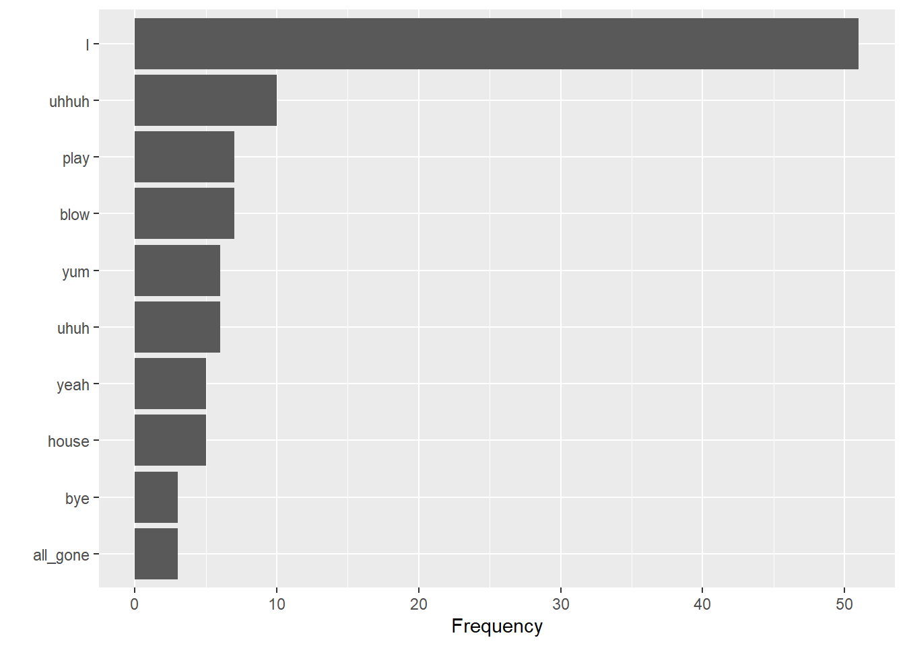
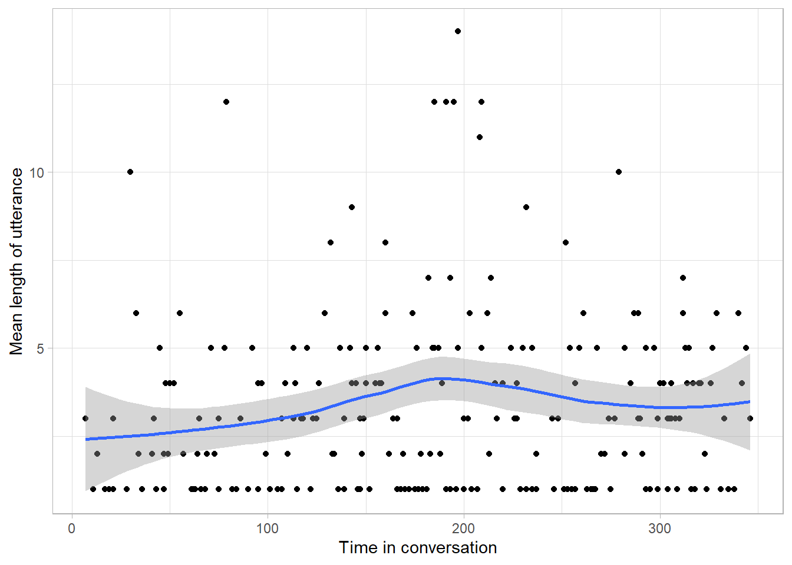
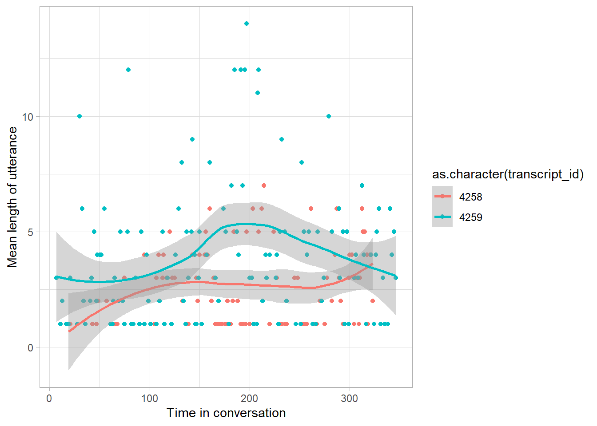
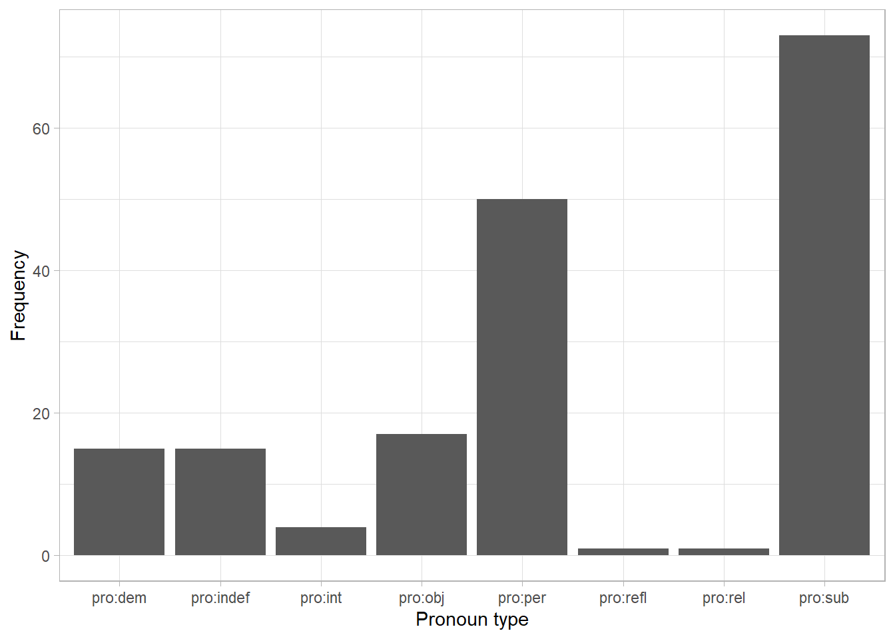

library(tidyverse)
library(tidytext)
library(childesr)SCICOGN302 workshop I:
Introduction to the CHILDES dataset
Fall 2024
Learning outcomes
In this tutorial you learn the steps needed to conduct basic text analysis in R using the CHILDES database of child language development. You will need these skills in the small homework assignment following this workshop, and in case you choose to complete a data assignment instead of an experiment for your final poster.
You learn how to import data into R with the childesr package, how to use basic text analysis tools, and how to visualize your results using the ggplot2 package.
First steps
This tutorial assumes that you completed the preparatory steps listed here.
If you get stuck at any point, check the help files of functions (access by running ?functionname), look at more extensive Data Center tutorials, try googling your question, attend Data Center office hours (TBA) or email datacenter@ucr.nl.
The code used in this tutorial is also available on Github.
Getting data from the CHILDES database
Open a new script and load the tidyverse, tidytext and childesr packages. We use tidyverse for data cleaning and plotting, tidytext for text analysis tools, and childesr to access the CHILDES database from within R.
The CHILDES database contains over 50 000 transcripts, featuring children at various ages and speaking various languages. To get an idea of what data is available, have a look at their searchable online database.
In this tutorial use data from a single, English-speaking child called Amy, who has two transcripts available in the “VanKleeck” corpus. For your own project(s), you should explore the database further to find a suitable sample.
In the online database transcripts are available as single raw text files, which would require some data cleaning before you can conveniently work with them in R. If you use the childesr package to load the data, then the transcripts will already load as clean dataframes.
You have two options for how your data should look like:
- If you only conduct analysis on the word level, you should use the
get_tokens()function. One row in your dataframe will correspond to one token (a token is generally a single word). - If you want to analyse longer expressions (up to full sentences), you should use the
get_utterances()function. One row in your dataframe will correspond to one utterance (an utterance is a phrase/expression/sentence (fragment))
In this tutorial we show examples of how to work with both data types. For the case of studying the transcripts of Amy, you can load the token-based and utterance-based datasets as follows:
tokens <- get_tokens(token = "*", collection = "Eng-NA", target_child = "Amy",
corpus = "VanKleeck", role = "target_child")
utterances <- get_utterances(collection = "Eng-NA", target_child = "Amy",
corpus = "VanKleeck", role = "target_child")Some notes for using different samples:
token = "*"means to download all words in the transcript, and is a necessary argument ofget_tokens().collectionandcorpusspecify the location of the transcripts and correspond to the categories in the online database.role = "target_child"means to download only the speech of the child, and not the parents or researchers having a conversation with the child. For other filters you can use, check the help files of the functions.- Don’t try to download large sets of transcripts, such as an entire collection without adding filters. Check the online database to see whether the sample that you are considering has a reasonable size.
You can view the downloaded dataframes by calling the View() function or clicking on the name of the dataframes in the Environment tab.
The key variables of tokens (token-based dataframe) are
- gloss: token(/word) as used in the speech
- stem: stem of the word in gloss
- part_of_speech: syntactic function of the word
- language, corpus_…, collection_… speaker_…, target_child_…: transcript metadata
The key variables of utterances (utterance-based dataframe) are
- gloss: utterance (built from tokens) as used in the speech
- stem: stem of each word in the utterance
- part_of_speech: syntactic structure of the utterance
- num_tokens: number of tokens in the utterance
- language, corpus_…, collection_… speaker_…, target_child_…: transcript metadata
Data manipulation
Counting frequencies
Let’s say you want to know what words Amy uses most frequently. To count how many times each word occurs, you can use the count() function. You need to specify the data and the variable that you’d like to count as the function arguments, and assign the result to a new object to store it in R’s memory. We use the “stem” variable instead of “gloss” to ignore suffixes, conjugation, etc. and set sort = TRUE to display the results from most to least frequent. Then we can print the top 10 most common words.
n_tokens <- count(tokens, stem, sort = TRUE)
head(n_tokens, 10)# A tibble: 10 × 2
stem n
<chr> <int>
1 "I" 51
2 "" 30
3 "it" 29
4 "be" 28
5 "go" 24
6 "you" 21
7 "the" 19
8 "a" 18
9 "in" 17
10 "no" 13You can see that these results do not tell us much. All of these words are very common and generic, and most don’t hold much meaning – they are so-called stopwords. In addition, the second most common token is blank (i.e. no intelligible word).
Filtering the data
To make our results more useful, we should filter the dataset first to keep only relevant observations. One way to do that is with the filter() function, which specifies the criteria that the data should meet in order to remain in the filtered dataset using logical expressions. For text analysis the most important logical operators are
==to mean an exact match (e.g.gloss == "cake"would only keep observations where Amy said “cake”)%in%to mean that the value matches one of multiple options (e.g.gloss %in% c("cake", "presents")would keep observations where Amy said “cake” OR “presents”)!which negates whatever statement it precedes (for exact matches the negated operator becomes!=).
You can also combine logical statements with & (and) and | (or) connectors. For instance, gloss %in% c("cake", "presents") is equivalent to gloss == "cake" | gloss == "presents". Used inside a filter() function, this would keep observations where Amy said “cake” OR “presents”.
filter(tokens, gloss %in% c("cake", "presents"))# A tibble: 3 × 28
id gloss language token_order prefix part_of_speech stem actual_phonology
<int> <chr> <chr> <int> <chr> <chr> <chr> <chr>
1 3.50e6 cake eng 2 "" n cake ""
2 3.50e6 pres… eng 1 "" n pres… ""
3 3.50e6 cake eng 4 "" n cake ""
# ℹ 20 more variables: model_phonology <chr>, suffix <chr>,
# num_morphemes <int>, english <chr>, clitic <chr>, utterance_type <chr>,
# corpus_name <chr>, speaker_code <chr>, speaker_name <chr>,
# speaker_role <chr>, target_child_name <chr>, target_child_age <dbl>,
# target_child_sex <chr>, collection_name <chr>, collection_id <int>,
# corpus_id <int>, speaker_id <int>, target_child_id <int>,
# transcript_id <int>, utterance_id <int>Another way to filter a dataset is to use the anti_join() function. With this function, you can remove all observations that also occur in a different dataset. This function can be especially useful if you want to exclude particular combinations of multiple variables, but it can also be used to remove stopwords from your dataset.
We can use the pre-defined dataset stop_words from the stopwords package to get a list of stopwords. This function creates a dataframe which has a variable word that serves as a list of stopwords. We can use the anti_join() function to keep only the words in tokens that are not in the stopword list. We need to specify the variables that we want to compare in the by argument. In our case, the word variable in the stop_words dataframe corresponds to the stem variable in the tokens dataframe.
tokens_filtered <- anti_join(tokens, stop_words, by = c("stem" = "word"))Now we can use the count() function on our filtered data, and the results are very different than before.
n_filtered <- count(tokens_filtered, stem, sort = TRUE)
head(n_filtered, 10)# A tibble: 10 × 2
stem n
<chr> <int>
1 "I" 51
2 "" 30
3 "uhhuh" 10
4 "blow" 7
5 "play" 7
6 "uhuh" 6
7 "yum" 6
8 "house" 5
9 "yeah" 5
10 "all_gone" 3These words are less generic, and actually look like words that children likely say a lot.
Tidy workflows
Instead of going through the previous previous two steps by assigning each intermediate result to a new object (see tokens_filtered), you can write a linear worflow where you start with your original data, apply each data manipulation step-by-step until you reach your final result.
To create such a workflow, you need the pipe operator (%>%): using it at the end of a line means that the next function uses the previous result as an input. In the following case, it takes the object tokens as the first argument of the anti_join() function, then introduces an additional filter to remove words where the stem is blank, and finally takes the resulting filtered data as the first argument of the count() function.
n_filtered <- tokens %>%
anti_join(stop_words, by = c("stem" = "word")) %>%
filter(stem != "") %>%
count(stem, sort = TRUE)Regular expressions (regex)
When working with text data, looking for direct matches with logical operators is often not sufficient. For example if you want to find all utterances that include the phrase “he is”, filter(gloss == "he is") will not keep “he is tall”, because it only looks for exact matches. No more, no less.
To get results that match a certain pattern (e.g. starting in a specific way or containing a particular sequence), we can use regular expressions. These expressions practically form a language of their own, and their advanced use can get very complex, but the basics are straightforward. You specify the pattern (e.g. contains “he is”), and specify the string in which you want to find that pattern (e.g. the gloss variable of the utt dataframe). Then you can use the str_detect() function to find matches: str_detect() returns a logical vector that you can use in the filter() function.
utterances %>%
filter(str_detect(gloss, "he is"))# A tibble: 4 × 27
id gloss stem actual_phonology model_phonology type language
<int> <chr> <chr> <chr> <chr> <chr> <chr>
1 811024 she is my little… she … "" "" decl… eng
2 811700 he is xxx airpla… he b… "" "" decl… eng
3 811746 he is standing u… he b… "" "" decl… eng
4 811763 now he is gonna … now … "" "" decl… eng
# ℹ 20 more variables: num_morphemes <int>, num_tokens <int>,
# utterance_order <int>, corpus_name <chr>, part_of_speech <chr>,
# speaker_code <chr>, speaker_name <chr>, speaker_role <chr>,
# target_child_name <chr>, target_child_age <dbl>, target_child_sex <chr>,
# media_start <dbl>, media_end <dbl>, media_unit <chr>,
# collection_name <chr>, collection_id <int>, corpus_id <int>,
# speaker_id <int>, target_child_id <int>, transcript_id <int>As you can see, Amy said the phrase “he is” four times, of which one time she said “she is”. We can use regular expressions to further narrow down our results. Some of the most useful regex patterns are
^xstarts with xx$ends with x(x|y)x or y.any characterx*x any number of times
So if we wanted to exclude “she is” from the previous results, the regular expression "(^| )he is" would do that: we look for the phrase “he is” either at the beginning of the phrase or preceded by whitespace.
For other regex patterns, see the second page of this cheat sheet.
Plotting with ggplot
Figures made with ggplot are built from several layers. You always use the same basic code structure to create a wide range of figures:
- The
ggplot()function creates a blank canvas for you to work on. - Geoms add the visual elements, such as points, lines, bars, or other shapes.
- Other specifications can include changing axis settings, setting the theme, adding labels, etc.
- You connect all these different specifications to each other using
+signs (similarly as you’d use the pipe operator%>%).
The variables that you want to display on the graph must always be wrapped in an aes() function, which stands for aesthetics. This specification tells R to determine the value of the aesthetic (x and y axes, colors, groups, line types, etc.) based on the value of the variable. aes() can be specified both in the main ggplot() function (in which case it will apply to all geoms) or within a geom_...() function (then it only applies to that geom).
Common plot types include
- scatterplots (
geom_point()) - line charts (
geom_line()) - bar charts (
geom_col()andgeom_bar()) - histograms (
geom_histogram()) - fitted curves (
geom_smooth())
For instance you can create a bar chart of the frequencies of the 10 most common words Amy uses. We can use the reorder() function to arrange the columns by frequency.
n_filtered %>%
head(10) %>%
ggplot() +
geom_col(aes(x = n, y = reorder(stem, n))) +
labs(x = "Frequency", y = "")
To observe language development, it is interesting to look at how various measures change with age. Since we only observe Amy at one age, we can’t plot that here, but as an alternative we can use the utterance_order variable to see whether Amy’s speech patterns change over the course of one conversation.
For example, we can plot the mean utterance length (equivalent to mean length of utterance (MLU), a common measure of language development) as a scatterplot with a fitted curve. Note that if you specify aesthetics in the ggplot() function, they apply to all geoms.
utterances %>%
ggplot(aes(x = utterance_order, y = num_tokens)) +
geom_point() +
geom_smooth() +
labs(x = "Time in conversation", y = "Mean length of utterance") +
theme_light()
From this plot we can see that while there are some particularly long utterances Amy made during the conversations, there is no clear pattern of increasing or decreasing utterance length during the conversation.
Since we have two transcripts from Amy, we can compare language development measures in the two transcripts (for your assignment yo can compare multiple children in a similar way). This figure is the same as the previous one, except that it specifies transcript_id as the grouping variable that should affect the color of the points, and therefore fits separate lines per transcript.
utterances %>%
ggplot(aes(x = utterance_order, y = num_tokens,
color = as.character(transcript_id))) +
geom_point() +
geom_smooth() +
labs(x = "Time in conversation", y = "Mean length of utterance") +
theme_light()
This plot tells us that the second transcript seems to have a slightly larger MLU, mainly because most of the particularly long utterances occurred in the second conversation.
We can also use regular expressions to look for particular patterns. For instance, we can check which types of pronouns (denoted pro:type) Amy uses the most.
tokens %>%
filter(str_detect(part_of_speech, "pro:")) %>%
count(part_of_speech) %>%
ggplot() +
geom_col(aes(x = part_of_speech, y = n)) +
labs(x = "Pronoun type", y = "Frequency") +
theme_light()
Subjective and personal pronouns (I, you, etc.) are clearly dominating Amy’s speech, however, she uses a wide range of different pronouns.
If you would like a brief introduction to some more useful functions in calculating measures of linguistic development, have a look at the workshop additional materials.